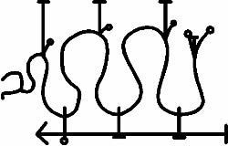

Ve bu onun mührü:

Ve Boşlukların Dört Ruhu vardır ve onlar Rüzgar üzerinde gelirler ve onlar Rüzgardan ve Ateşten yapılmış Varlıklardır. Ve İlki Kuzeyden gelir ve ona USTUR denir ve İnsan Şekline sahiptir. Ve O Dördü arasındaki En Kadim olandır ve Dünyanın Yüce Tanrılarındandır. Ve İkincisi Doğudan gelir ve ona SED denir ve bir Boğa Şekline sahiptir, ama yüzü insan yüzüdür ve çok kudretlidir. Ve Üçüncüsü güneyden gelir ve ona LAMAS denir ve Aslan Şekillidir, ama insan kafası vardır ve Alevleri ve Yakıcı Rüzgarları yönetir. Ve Dördüncü Batıdan gelir ve ona NATTIG denir ve bir Kartal Şekline sahiptir, ancak insan bedeniyle, yalnızca bir Kartalın yüzü ve kanatları, Kartal pençeleri vardır onda. Ve Kartal Denizden gelir ve çok Büyük bir Gizemdir.
Ve Uru üzerindeki Nuzku’dan gelir onlar ve beklemezler ve her zaman hazırdırlar ve kendi mevsimlerindeki Gezginleri kabul ederler. Ve SED’in mevsimi, Ayının öldüğü Büyük Gecenin mevsimidir ve bu AIRU ayıdır. Ve LAMAS’ın mevsimi, ABU ve NATTIG’inki ARAHSHAMMA ve son olarak USTUR’unki SHABATU Ayıdır. Dört Boşluğun Dört Ruhu ve onların mevsimleri böyledir ve onlar Güneşin Boşlukları arasında ikamet ederler ve onlara ait değil, Yıldızlara aittirler ve söylendiğine göre, bu herkesçe bilinmese bile fazlasıyla IGIGI’ye aittir.
Ve bunları ve diğer Demonları çağırmak için AGLAOPHOTIS şifalı bitkisi yeni bir kase içinde Gecenin Şer Vakitlerinde yakılmalıdır.
Ve İnsan şekline bürünmek istediğinde, KINGU’nun Kanından gelmiş olan İnsanlardan kan emen ama asla bir İnsan olamayan AKHKHARU da çağrılabilir.